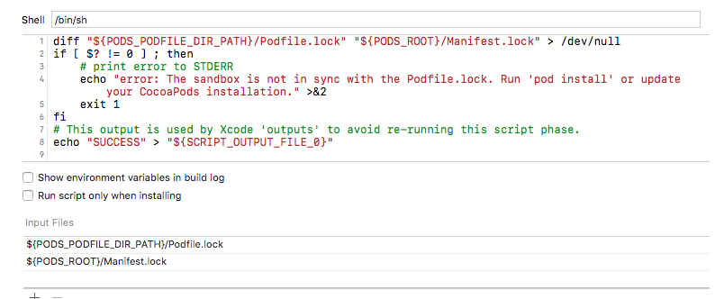

一：安装
安装cocoapods
sudo gem install cocoapods
安装指定版本的cocoapods
在协同开发时，podfile文件会加入Git版本库，为了防止pod版本不一样，导致其他开发人员Pod时执行错误，所以协同开发时最好安装一样的版本号。sudo gem install cocoapods -v 1.4
二：初次使用
更新cocoapods的repo
如果是新电脑或者没有下载过repo执行pod repo update。这个耗时会很长，这个文件现在达到2G了。改repo下载完后在/Users/用户目录/.cocoapods（这个文件夹的作用将在后面说明）生成podfile文件
在指定的xcode工程目录下执行pod init就会有一个Podfile文件生成，或者干脆从其他工程里拷贝一份过来也行。
编辑如platform:ios,'7.1' pod 'SDWebImage', '~>3.7' pod 'AFNetworking'查找相关库
有时为了查看要使用一个第三方库的指定版本号，pod search AFNetworking进行类似的查询，将会列出历史版本。pod install 与pod update
pod install
在podfile.lock不存在时，会根据podfile文件生成这个文件，并安装相应的库。存在时会根据podfile.lock文件下载与安装相应的库。pod update
会根据podfile文件更新库，并更新podfile.lock文件。也就是pod update时，会检测podfile文件里有的库配置是没有指定版本号的就会取最新的版本号，重新下载与安装。--no-repo-update
其主要的作用是用于在执行pod install和pod update两条命令是而执行的pod repo update的操作。pod repo update操作时间比较长，这也就是为什么平时我们加--no-repo-update的原因
三：podfile文件深入
pod '框架名' 参数
参数需要特别说明下指定版本号(这个版本号是spec文件)
’>3.7' 大于3.7版本
'>=3.7' 大于等于3.7版本
'<3.7' 小于3.7版本
'~>3.7' 大于等于3.7并且小于3.8版本（这个参数有意思，经常使用的也是这个参数）指定path,branch,tag,commit
:branch => 'branch名'
:tag => 'tag名'
:commit => '提交号'
:path => '~/Documents/AFNetworking'
platform
platform :ios, '7.0'。说希望采用iOS7.0的进行编译
最好进行指定，不指定的化，会采用默认的，因为有些库指定了最低的ios版本所以，不指定的化可能编译不过target
如果不指定的化，就默认是全部的target。有些时候我向在一个target里有，在其他target没有，这是就可以采用下面指定target指定需要的库target 'TRapidCalculation' do //写你要的库 end target 'TRapidCalculation_auto' do //写你要的库 enduse_frameworks!
这个指明编译成动态库，而不是静态库，特别是在使用Swift库的过程中，特别需要使用这句，swift里。不过他会把所有项目的编译动态库，这一点有点不好。不过在使用Swift库的过程中就没办法了。source
Cocoapods从哪些仓库(装有Spec文件的repo)中获得框架的源代码。（至于什么是Spec我将在后面建立私有库里做说明）我们使用公开的第三库时都是使用的source 'https://github.com/CocoaPods/Specs.git'这个源。在做私有库时，可以引用自己源如我的source 'git@gitee.com:BlueLegend/BlueLegendPrivateSpec.git'podfile文件示例
#公用的私有远程索引库源
source 'git@gitee.com:BlueLegend/BlueLegendPrivateSpec.git'
#github远程索引库源
source 'https://github.com/CocoaPods/Specs.git'
platform :ios, '8.0'
target ‘CoreConcept’ do
pod 'lottie-ios'
pod 'Masonry'
pod 'SDWebImage', '~> 4.3.0'
pod 'YYModel', '~> 1.0.4'
pod 'YYCache', '~> 1.0.4'
pod 'YYText', '~> 1.0.7'
pod 'BlocksKit', '~> 2.2.5'
pod 'MJRefresh', '~> 3.1.15.3'
pod 'KBRCategory'
pod 'HyphenateLite'
end
四：podfile.lock文件深入
Podfile.lock 文件主要包含三个块：
PODS 用来记录每个pod的版本号
DEPENDENCIES 依赖的其他库
SPEC CHECKSUMS 每个库对应的podspec.json文件的checksum(SHA-1算法)。
通过这些信息可以确保多人协作的时候，大家使用的是相同版本的第三方库。
当团队中的某个人执行完pod install命令后，生成的Podfile.lock文件就记录下了当时最新Pods依赖库的版本，这时团队中的其它人check下来这份包含Podfile.lock文件的工程以后，再去执行pod install命令时，获取下来的Pods依赖库的版本就和最开始用户获取到的版本一致。如果没有Podfile.lock文件，后续所有用户执行pod install命令都会获取最新版本的SBJson，这就有可能造成同一个团队使用的依赖库版本不一致，这对团队协作来说绝对是个灾难!
五：Manifest.lock文件
Manifest.lock文件格式与podfile.lock文件是一样的。主要用来对比远程与本地安装文件是否一样。
Manifest.lock是你的本地的清单，在你没做任何操作时时与podfile.lock文件内容一样的。但当你git pull 从其他开发人员那里拿到了podfile.lock文件，其他开发人员可能修改了podfile.lock文件，就造成安装清单不一致。需要你pod install重新安装，Manifest.lock这个文件，重新保持了两个文件的一致性。所以我们在工程文件里编译脚本里有这两个文件的比较。
diff "${PODS_PODFILE_DIR_PATH}/Podfile.lock" "${PODS_ROOT}/Manifest.lock" > /dev/null
if [ $? != 0 ] ; then
# print error to STDERR
echo "error: The sandbox is not in sync with the Podfile.lock. Run 'pod install' or update your CocoaPods installation." >&2
exit 1
fi
# This output is used by Xcode 'outputs' to avoid re-running this script phase.
echo "SUCCESS" > "${SCRIPT_OUTPUT_FILE_0}"
还是给个截图解释下
/bin/sh 是指定脚本解释器（这里是shell脚本解释器）
inputFile 就是Podfile.lock文件与Mainifest.lock
